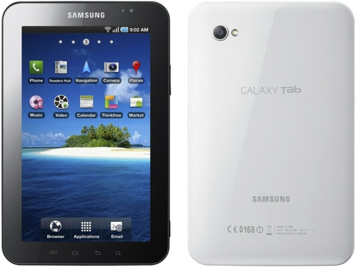

삼성 갤럭시 탭
1. 외관

삼성전자가 2010년 9월, IFA 2010에서 공개한 안드로이드 태블릿 컴퓨터이자 삼성전자가 제조한 최초의 7.0인 안드로이드 태블릿 컴퓨터다. 개발 코드네임은 P1.
2. 사양
| 프로세서 | 삼성 엑시노스 3110 SoC. ARM Cortex-A8 1 GHz CPU, PowerVR SGX540 200 MHz GPU | ||
| 메모리 | 512 MB RAM, 1 GB OneNAND & 16 / 32 GB eMMC 4.3 moviNAND 내장 메모리, micro SDHC (최대 32 GB 지원) | ||
| 디스플레이 |
7.0인치 WSVGA(1024 x 600) RGB 서브픽셀 방식의 SMD Super TFT-LCD (169 ppi) 멀티터치 지원 정전식 터치 스크린 |
||
| 네트워크 | 기본 | HSDPA & HSUPA & UMTS, GSM & EDGE, Mobile WiMAX, CDMA & EV-DO Rev. A | Wi-Fi 802.11a/b/g/n/ac, 블루투스 4.1+BLE, NFC, ANT+ |
| - | - | ||
| 카메라 | 전면 130만 화소, 후면 300만 화소 AF 및 LED 플래시 | ||
| 배터리 | 내장형 Li-Polymer 4000 mAh | ||
| 운영체제 | 안드로이드 2.2 (Froyo) → 2.3 (Gingerbread) | ||
| 규격 | 120.45 x 190.1 x 11.98 mm, 386 g | ||
3. 상세
애플이 9.7인치의 태블릿 컴퓨터인 아이패드로 태블릿 컴퓨터 시장의 개막을 선언하자, 삼성전자가 이에 대항(...)하기 위해 준비한 자사의 첫 번째 태블릿 컴퓨터이다. 아이패드가 버티고 있는 대형 태블릿 컴퓨터 시장을 전면 돌파하지 않고, 7.0인치의 소형 태블릿 컴퓨터로 측면 공략을 한 것으로 보인다.
전반적인 사양은 2010년을 책임지는 자사의 플래그쉽 스마트폰인 갤럭시 S와 비슷하다. AP로 삼성 엑시노스 3110을 사용한다. 1 GHz 클럭의 ARM Cortex-A8 싱글코어 CPU를 사용한다. GPU는 이매지네이션 테크놀러지의 PowerVR SGX540 GPU를 사용한다.
RAM 용량은 512 MB로 갤럭시 S와 동일하다. 갤럭시 S의 변태 같은 내장 메모리 구조를 그대로 적용해 1 GB의 OneNAND 시스템 및 데이터 파티션 전용 메모리와 16 GB, 32 GB의 moviNAND 사용자 공간 메모리를 별도로 구분한다.